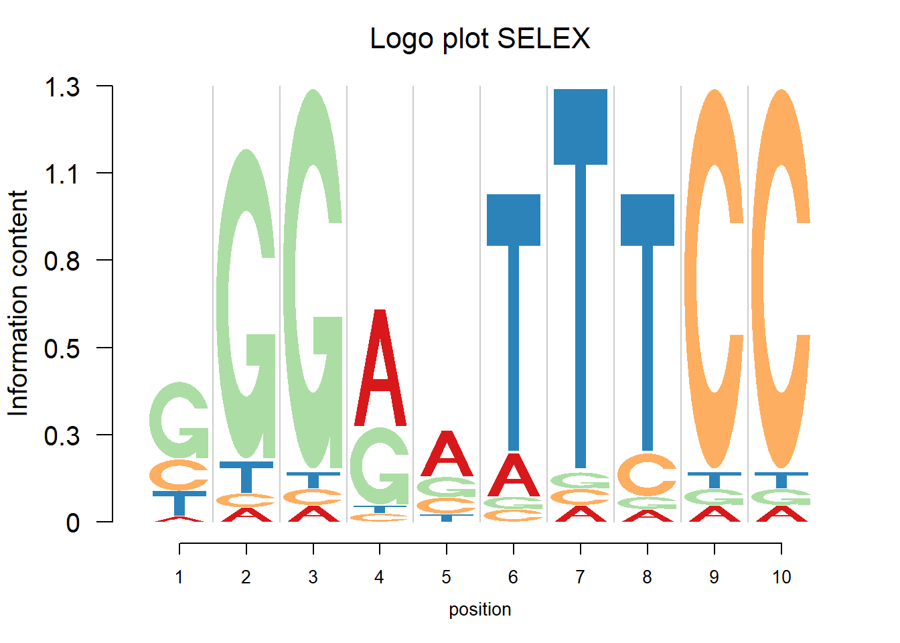
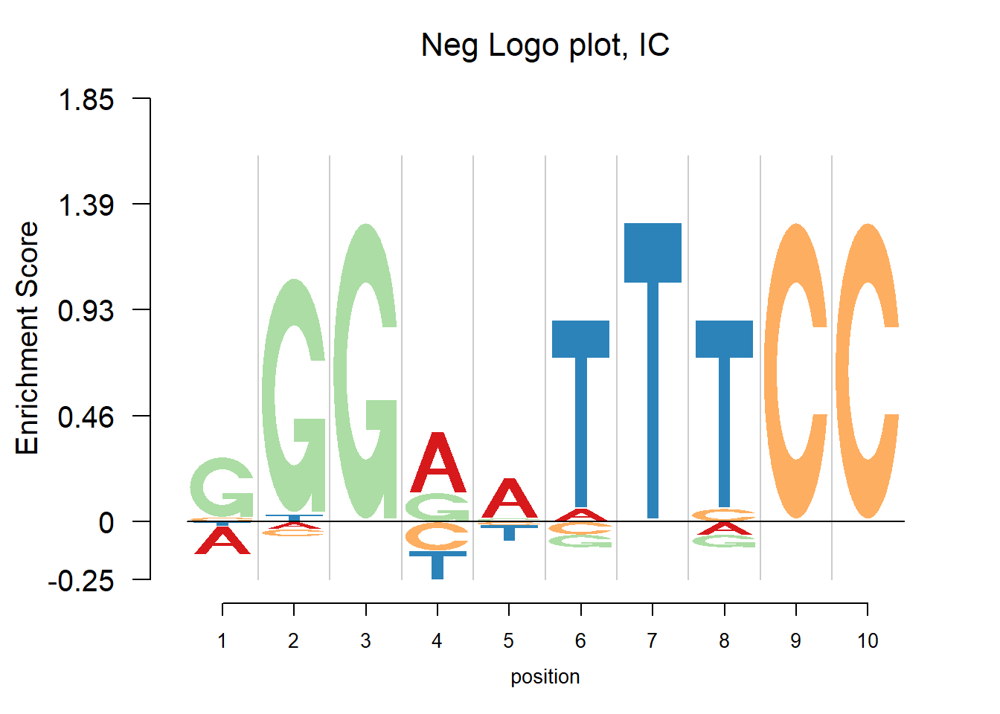
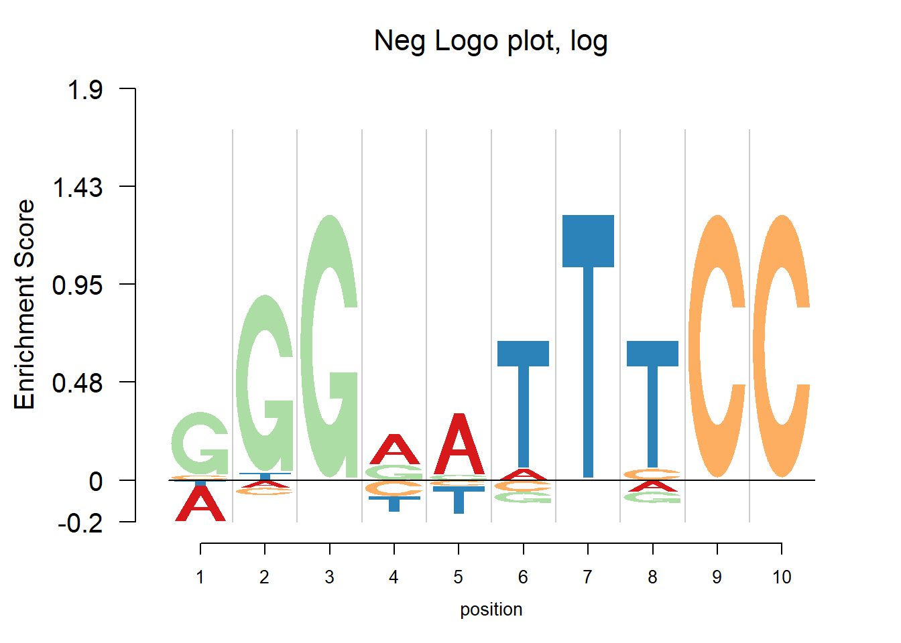
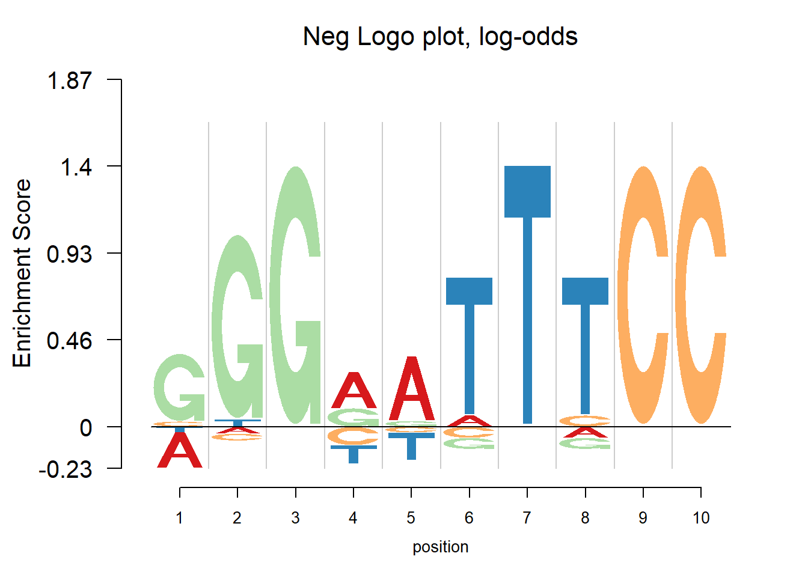
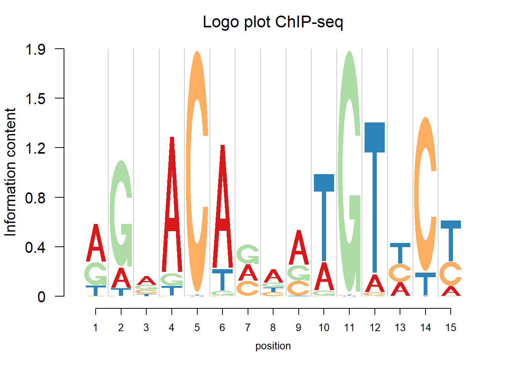
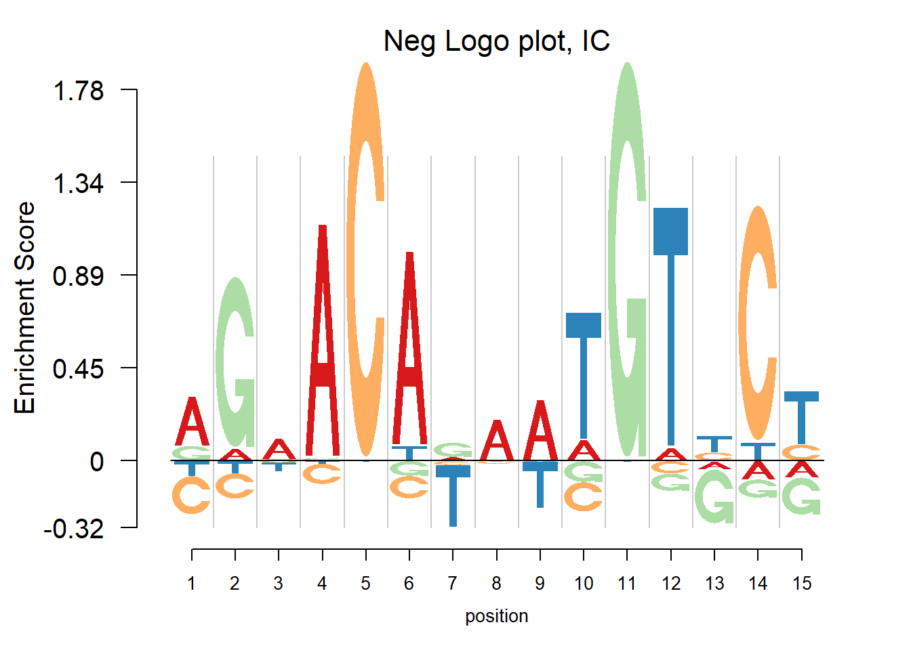
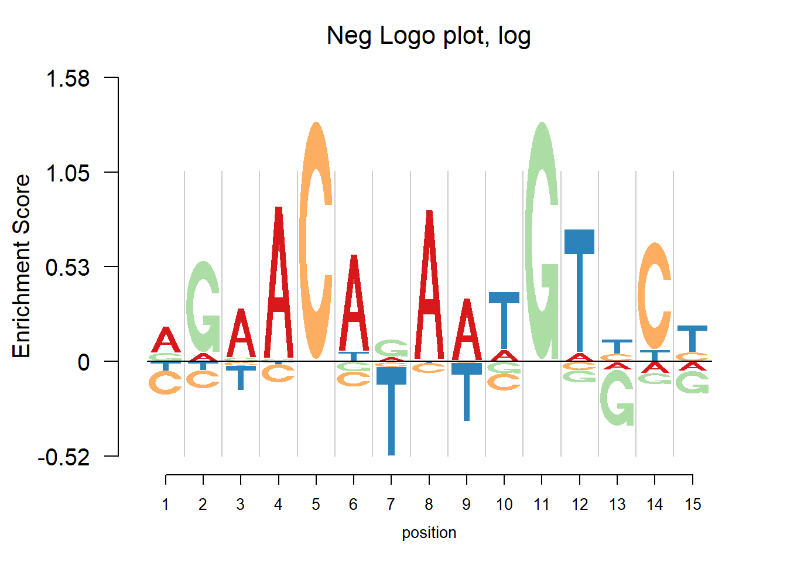
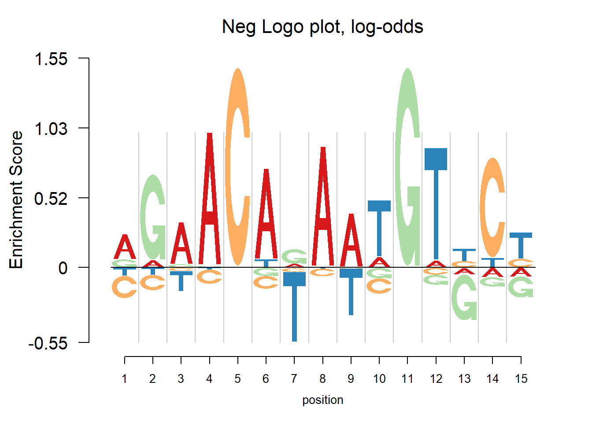

Last updated: 2017-07-18
Code version: 49915de
In the logo plots, the transcription factor binding sequence patterns are visualized. The enrichment is highlighted while the depletion is usually overlooked. In the negative logo plot, the depletion is plotted down below the zero on y-axis so that we can find both strong positive and negative effects.
The nlogomaker function from R package “Logolas” provides negative logo plots. And there are three different options of logo heights: information content, log probability and log-odds. More details can be found here: https://github.com/kkdey/Logolas.
The following section presents some negative logo plots to give us an initial look at them.
The data of this example are from JASPAR2014. JASPAR is a collection of transcription factor DNA-binding preferences. We used the data from R package “JASPAR2014”. There are total 593 PFMs. We show the logo plot firstly and then the negative plot. Also, the corresponding IUPAC code is given as a reference. See http://www.bioinformatics.org/sms/iupac.html for the IUPAC code.
#extract all pfms
opts = list()
PFMlist = getMatrixSet(JASPAR2014,opts)
opts2 = list()
opts2[["type"]] = "SELEX"
#get the PFMs from SELEX
PFMselex = getMatrixSet(JASPAR2014, opts2)
#get the PFMs from 'CHIP'
opts3 = list()
opts3[['type']] = 'ChIP-seq'
PFMchip = getMatrixSet(JASPAR2014,opts3)
#methods in JASPAR2014
mtd=c()
for(i in 1:593){mtd[i]=ifelse(is.null(PFMlist[[i]]@tags$type),'',PFMlist[[i]]@tags$type)}
unique(mtd) [1] "SELEX" "COMPILED"
[3] "" "ChiP-seq"
[5] "Chip-seq" "High-throughput SELEX SAGE"
[7] "bacterial 1-hybrid" "DNaseI footprinting"
[9] "EMSA" "PBM"
[11] "PBM, CSA and/or DIP-chip" "ChIP-on-chip"
[13] "ChIP-seq" "ChIP-chip"
[15] "ChIP-Seq" #A function to get the pwm for logomaker()
scale1=function(x){return(x/sum(x))}
pwm = function(pfm,bg=0.25){
pfm=as.matrix(pfm)
pseudo=sqrt(dim(pfm)[2])/4
pwm=apply((pfm+pseudo),2,scale1)
rownames(pwm)=c('A','C','G','T')
colnames(pwm)=1:dim(pfm)[2]
return(pwm)
}
# A function to get the sequence motif.
GetIUPACSequence = function(pwm, prob = 0.25) {
iupac.table =
c(".", "A", "C", "M", "G", "R", "S", "V", "T", "W", "Y", "H", "K", "D", "B", "N")
iupac.value = t((pwm >= prob)) %*% c(1, 2, 4, 8) + 1
return(paste(iupac.table[iupac.value], collapse = ""))
}
color_profile = list("type" = "per_row",
"col" = RColorBrewer::brewer.pal(4,name ="Spectral"))This section shows the logo plots of the motifs from HT-SELEX.
for(i in c(61)){
pfm=as.matrix(PFMselex[[i]])
print(GetIUPACSequence(pwm(pfm)))
logomaker(pwm(pfm),xlab = 'position',color_profile = color_profile,frame_width = 1,
pop_name=paste('Logo plot SELEX'))
nlogomaker(pwm(pfm),logoheight = 'ic',xlab = 'position',color_profile = color_profile,frame_width = 1, pop_name=paste('Neg Logo plot, IC'),ylimit = 2.1)
nlogomaker(pwm(pfm),logoheight = 'log',xlab = 'position',color_profile = color_profile,frame_width = 1, pop_name=paste('Neg Logo plot, log'),ylimit = 2.1)
nlogomaker(pwm(pfm),logoheight = 'log_odds',xlab = 'position',color_profile = color_profile,frame_width = 1, pop_name=paste('Neg Logo plot, log-odds'),ylimit = 2.1)
}[1] "GGGRATTTCC"
This section shows the logo plots of the motifs from CHIP-seq.
for(i in c(121)){
pfm=as.matrix(PFMchip[[i]])
print(GetIUPACSequence(pwm(pfm)))
logomaker(pwm(pfm),xlab = 'position',color_profile = color_profile,frame_width = 1,
pop_name=paste('Logo plot ChIP-seq'))
nlogomaker(pwm(pfm),logoheight = 'ic',xlab = 'position',color_profile = color_profile,frame_width = 1, pop_name=paste('Neg Logo plot, IC'),ylimit = 2.1)
nlogomaker(pwm(pfm),logoheight = 'log',xlab = 'position',color_profile = color_profile,frame_width = 1, pop_name=paste('Neg Logo plot, log'),ylimit = 2.1)
nlogomaker(pwm(pfm),logoheight = 'log_odds',xlab = 'position',color_profile = color_profile,frame_width = 1, pop_name=paste('Neg Logo plot, log-odds'),ylimit = 2.1)
}[1] "RGAACAVAATGTHCY"
In the examples above, there are depletions of bases shown in the negative logo plot. It may be considered that the transcription factor would find both enrichment and depletion to decide whether to bind. For example, in the last plot, the depletion of T at position 7 probably means the TF ‘dislike’ T at that position. So here to understand the mechanism of transcription factor seems vital. Trying to tell whether the transcription factor would bind to a specific site, logo plot may be more straightforward since looking at the core motif would probably enough to answer yes or no. But negative logo plot may help understand how the TF works.
sessionInfo()R version 3.4.0 (2017-04-21)
Platform: x86_64-w64-mingw32/x64 (64-bit)
Running under: Windows 10 x64 (build 15063)
Matrix products: default
locale:
[1] LC_COLLATE=English_United States.1252
[2] LC_CTYPE=English_United States.1252
[3] LC_MONETARY=English_United States.1252
[4] LC_NUMERIC=C
[5] LC_TIME=English_United States.1252
attached base packages:
[1] stats4 parallel stats graphics grDevices utils datasets
[8] methods base
other attached packages:
[1] Logolas_1.1.2 TFBSTools_1.14.0 JASPAR2014_1.12.0
[4] Biostrings_2.43.8 XVector_0.15.2 IRanges_2.9.19
[7] S4Vectors_0.13.17 BiocGenerics_0.22.0
loaded via a namespace (and not attached):
[1] Rcpp_0.12.11 lattice_0.20-35
[3] GO.db_3.4.1 png_0.1-7
[5] Rsamtools_1.27.16 gtools_3.5.0
[7] rprojroot_1.2 digest_0.6.12
[9] R6_2.2.0 GenomeInfoDb_1.12.0
[11] plyr_1.8.4 backports_1.0.5
[13] RSQLite_1.1-2 evaluate_0.10
[15] httr_1.2.1 ggplot2_2.2.1
[17] zlibbioc_1.21.0 lazyeval_0.2.0
[19] annotate_1.54.0 R.utils_2.5.0
[21] R.oo_1.21.0 Matrix_1.2-9
[23] rmarkdown_1.6 splines_3.4.0
[25] BiocParallel_1.10.0 readr_1.1.1
[27] stringr_1.2.0 CNEr_1.12.0
[29] RCurl_1.95-4.8 munsell_0.4.3
[31] DelayedArray_0.2.0 compiler_3.4.0
[33] rtracklayer_1.35.12 seqLogo_1.42.0
[35] DirichletMultinomial_1.18.0 htmltools_0.3.5
[37] KEGGREST_1.16.0 SummarizedExperiment_1.6.0
[39] tibble_1.3.0 GenomeInfoDbData_0.99.0
[41] matrixStats_0.52.2 XML_3.98-1.6
[43] TFMPvalue_0.0.6 GenomicAlignments_1.11.12
[45] bitops_1.0-6 R.methodsS3_1.7.1
[47] grid_3.4.0 xtable_1.8-2
[49] gtable_0.2.0 DBI_0.6-1
[51] git2r_0.18.0 magrittr_1.5
[53] scales_0.4.1 stringi_1.1.5
[55] reshape2_1.4.2 RColorBrewer_1.1-2
[57] tools_3.4.0 BSgenome_1.44.0
[59] Biobase_2.35.1 poweRlaw_0.70.0
[61] hms_0.3 yaml_2.1.14
[63] AnnotationDbi_1.38.1 colorspace_1.3-2
[65] GenomicRanges_1.27.23 caTools_1.17.1
[67] memoise_1.1.0 VGAM_1.0-3
[69] knitr_1.15.1 This R Markdown site was created with workflowr